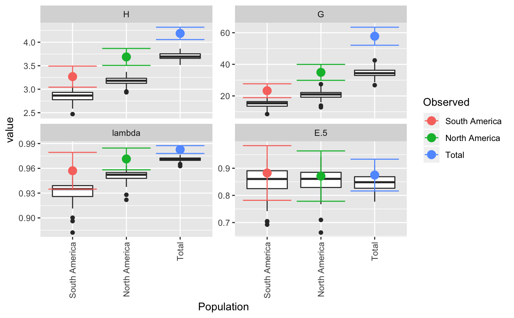
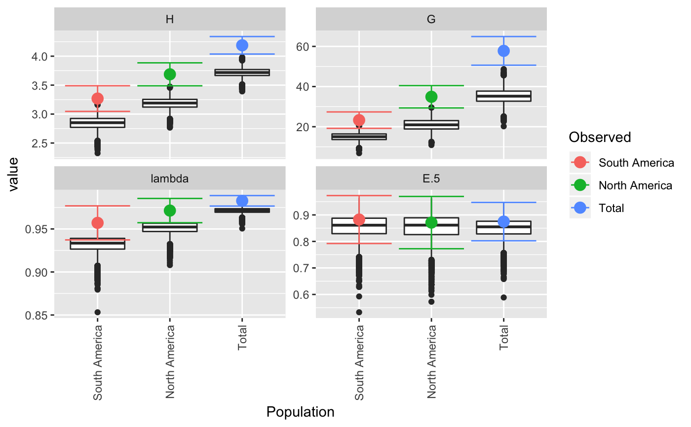
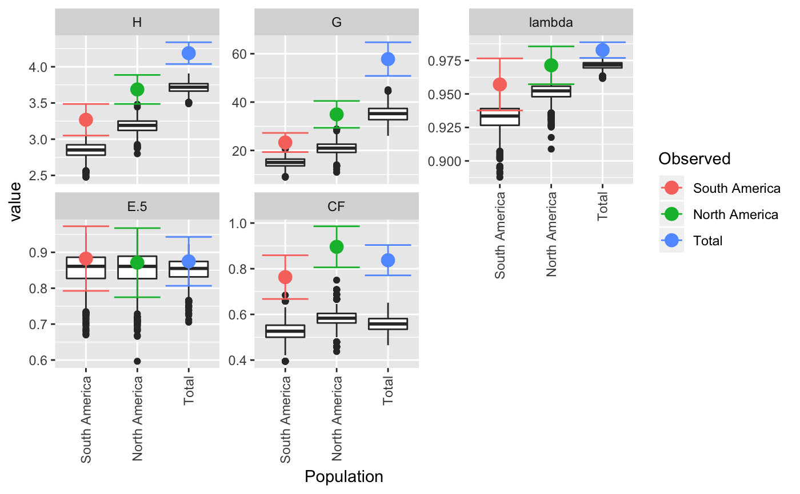
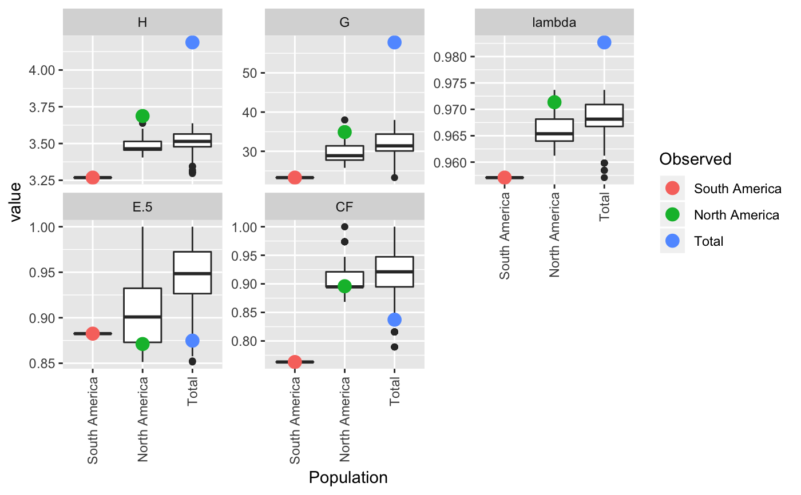

R/bootstraping.R
diversity_ci.RdThis function is for calculating bootstrap statistics and their confidence intervals. It is important to note that the calculation of confidence intervals is not perfect (See Details). Please be cautious when interpreting the results.
diversity_ci(tab, n = 1000, n.boot = 1L, ci = 95, total = TRUE, rarefy = FALSE, n.rare = 10, plot = TRUE, raw = TRUE, center = TRUE, ...)
| tab | a [genind()], [genclone()], [snpclone()], OR a matrix produced from [poppr::mlg.table()]. |
|---|---|
| n | an integer defining the number of bootstrap replicates (defaults to 1000). |
| n.boot | an integer specifying the number of samples to be drawn in each bootstrap replicate. If `n.boot` < 2 (default), the number of samples drawn for each bootstrap replicate will be equal to the number of samples in the data set. See Details. |
| ci | the percent for confidence interval. |
| total | argument to be passed on to [poppr::mlg.table()] if `tab` is a genind object. |
| rarefy | if `TRUE`, bootstrapping will be performed on the smallest population size or the value of `n.rare`, whichever is larger. Defaults to `FALSE`, indicating that bootstrapping will be performed respective to each population size. |
| n.rare | an integer specifying the smallest size at which to resample data. This is only used if `rarefy = TRUE`. |
| plot | If `TRUE` (default), boxplots will be produced for each population, grouped by statistic. Colored dots will indicate the observed value.This plot can be retrieved by using `p <- last_plot()` from the ggplot2 package. |
| raw | if `TRUE` (default) a list containing three elements will be returned |
| center | if `TRUE` (default), the confidence interval will be centered around the observed statistic. Otherwise, if `FALSE`, the confidence interval will be bias-corrected normal CI as reported from [boot::boot.ci()] |
| ... | parameters to be passed on to [boot::boot()] and [diversity_stats()] |
Marcon, E., Herault, B., Baraloto, C. and Lang, G. (2012). The Decomposition of Shannon’s Entropy and a Confidence Interval for Beta Diversity. *Oikos* 121(4): 516-522.
[diversity_boot()] [diversity_stats()] [poppr()] [boot::boot()] [boot::norm.ci()] [boot::boot.ci()]
#> #> #>#> $obs #> Index #> Pop H G lambda E.5 #> South America 3.267944 23.29032 0.9570637 0.8825297 #> North America 3.687013 34.90909 0.9713542 0.8711297 #> Total 4.188215 57.78125 0.9826933 0.8748360 #> #> $est #> Index #> Pop H G lambda E.5 #> South America 2.833824 14.79798 0.9311496 0.8544553 #> North America 3.171712 20.77268 0.9509115 0.8575978 #> Total 3.737709 36.14695 0.9721228 0.8545293 #> #> $CI #> , , Pop = South America #> #> Index #> CI H G lambda E.5 #> 2.5 % 3.062549 19.39068 0.9380503 0.7874810 #> 97.5 % 3.473339 27.18996 0.9760771 0.9775784 #> #> , , Pop = North America #> #> Index #> CI H G lambda E.5 #> 2.5 % 3.477771 29.28776 0.9574745 0.7856077 #> 97.5 % 3.896256 40.53043 0.9852338 0.9566518 #> #> , , Pop = Total #> #> Index #> CI H G lambda E.5 #> 2.5 % 4.064085 51.70041 0.9777506 0.8083156 #> 97.5 % 4.312344 63.86209 0.9876361 0.9413564 #> #> #> $boot #> $boot$`South America` #> #> PARAMETRIC BOOTSTRAP #> #> #> Call: #> boot::boot(data = xi, statistic = boot_stats, R = n, sim = "parametric", #> ran.gen = rg, mle = mle, H = H, G = G, lambda = lambda, E5 = E5) #> #> #> Bootstrap Statistics : #> original bias std. error #> t1* 3.2679442 -0.43412046 0.104795360 #> t2* 23.2903226 -8.49234657 1.989649686 #> t3* 0.9570637 -0.02591413 0.009700875 #> t4* 0.8825297 -0.02807440 0.048495128 #> #> $boot$`North America` #> #> PARAMETRIC BOOTSTRAP #> #> #> Call: #> boot::boot(data = xi, statistic = boot_stats, R = n, sim = "parametric", #> ran.gen = rg, mle = mle, H = H, G = G, lambda = lambda, E5 = E5) #> #> #> Bootstrap Statistics : #> original bias std. error #> t1* 3.6870132 -0.51530116 0.106758256 #> t2* 34.9090909 -14.13640867 2.868080775 #> t3* 0.9713542 -0.02044271 0.007081601 #> t4* 0.8711297 -0.01353197 0.043634495 #> #> $boot$Total #> #> PARAMETRIC BOOTSTRAP #> #> #> Call: #> boot::boot(data = xi, statistic = boot_stats, R = n, sim = "parametric", #> ran.gen = rg, mle = mle, H = H, G = G, lambda = lambda, E5 = E5) #> #> #> Bootstrap Statistics : #> original bias std. error #> t1* 4.1882146 -0.45050546 0.063332702 #> t2* 57.7812500 -21.63430353 3.102524528 #> t3* 0.9826933 -0.01057058 0.002521865 #> t4* 0.8748360 -0.02030672 0.033939592 #> #># With pretty results diversity_ci(Pinf, n = 100L, raw = FALSE)#> #> #>#> H H.est H.ci G G.est G.ci lambda #> South America 3.27 2.85 (3.044, 3.492) 23.3 15.0 (18.91, 27.671) 0.957 #> North America 3.69 3.18 (3.506, 3.868) 34.9 20.8 (29.862, 39.956) 0.971 #> Total 4.19 3.71 (4.057, 4.32) 57.8 34.7 (52.075, 63.488) 0.983 #> lambda.est lambda.ci E.5 E.5.est E.5.ci #> South America 0.932 (0.935, 0.979) 0.883 0.851 (0.782, 0.983) #> North America 0.951 (0.958, 0.985) 0.871 0.852 (0.778, 0.964) #> Total 0.971 (0.978, 0.987) 0.875 0.847 (0.816, 0.933)# This can be done in a parallel fasion (OSX uses "multicore", Windows uses "snow") system.time(diversity_ci(Pinf, 10000L, parallel = "multicore", ncpus = 4L))#> #> #>#> user system elapsed #> 1.129 0.238 5.437#> #> #>#> user system elapsed #> 6.423 0.132 6.595# We often get many requests for a clonal fraction statistic. As this is # simply the number of observed MLGs over the number of samples, we # recommended that people calculate it themselves. With this function, you # can add it in: CF <- function(x){ x <- drop(as.matrix(x)) if (length(dim(x)) > 1){ res <- rowSums(x > 0)/rowSums(x) } else { res <- sum(x > 0)/sum(x) } return(res) } # Show pretty results diversity_ci(Pinf, 1000L, CF = CF, center = TRUE, raw = FALSE)#> #> #>#> H H.est H.ci G G.est G.ci lambda #> South America 3.27 2.84 (3.05, 3.486) 23.3 14.9 (19.332, 27.249) 0.957 #> North America 3.69 3.18 (3.487, 3.887) 34.9 20.9 (29.365, 40.453) 0.971 #> Total 4.19 3.71 (4.038, 4.338) 57.8 35.2 (50.826, 64.736) 0.983 #> lambda.est lambda.ci E.5 E.5.est E.5.ci CF #> South America 0.932 (0.938, 0.977) 0.883 0.854 (0.793, 0.973) 0.763 #> North America 0.951 (0.957, 0.985) 0.871 0.852 (0.775, 0.967) 0.896 #> Total 0.971 (0.977, 0.989) 0.875 0.851 (0.807, 0.943) 0.837 #> CF.est CF.ci #> South America 0.530 (0.667, 0.859) #> North America 0.583 (0.806, 0.986) #> Total 0.557 (0.771, 0.904)diversity_ci(Pinf, 1000L, CF = CF, rarefy = TRUE, raw = FALSE)#> #>#> H H.est H.ci G G.est G.ci lambda #> South America 3.27 3.27 <NA> 23.3 23.3 <NA> 0.957 #> North America 3.69 3.48 (3.405, 3.565) 34.9 29.5 (25.786, 34.381) 0.971 #> Total 4.19 3.50 (3.368, 3.601) 57.8 31.6 (25.786, 36.1) 0.983 #> lambda.est lambda.ci E.5 E.5.est E.5.ci CF #> South America 0.957 <NA> 0.883 0.883 <NA> 0.763 #> North America 0.966 (0.961, 0.971) 0.871 0.903 (0.851, 0.972) 0.896 #> Total 0.968 (0.961, 0.972) 0.875 0.944 (0.873, 0.985) 0.837 #> CF.est CF.ci #> South America 0.763 <NA> #> North America 0.906 (0.868, 0.947) #> Total 0.910 (0.816, 0.974)